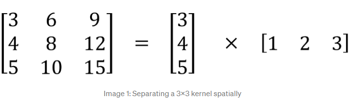
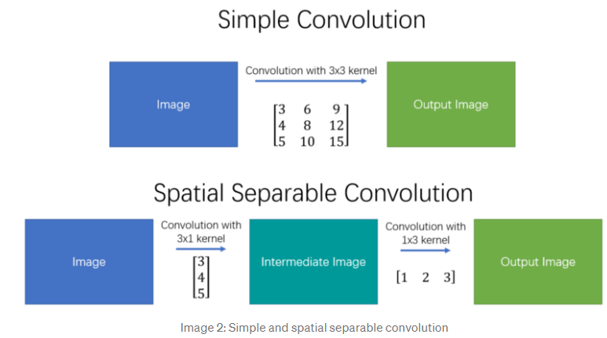
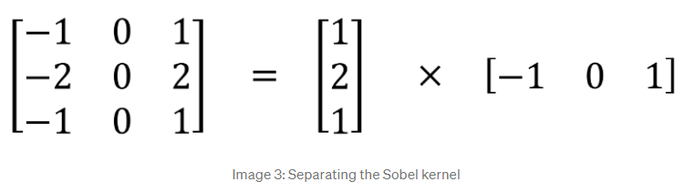
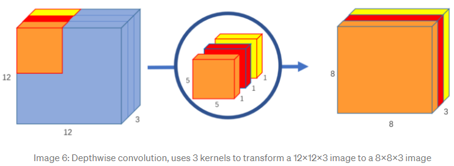
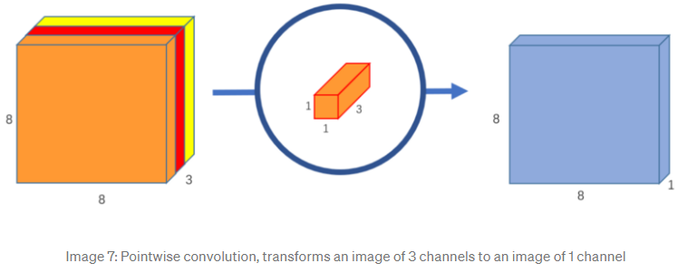
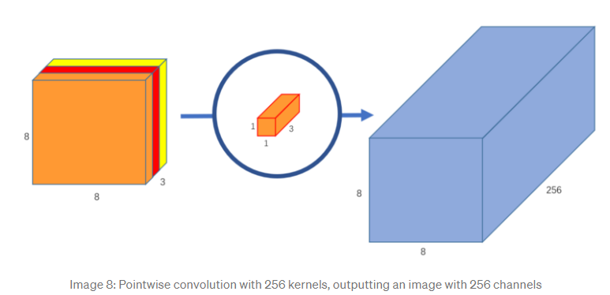

Separable Convolutions, Briefly
Spatial vs. depthwise separable convolutions: what they factorize, why they save compute, and when they hurt.
Separable convolutions trade a single expensive convolution for two cheap ones. This is a short note on the two flavors, spatial and depthwise, and their drawbacks.
Spatial Separable Convolutions
- Have significant limitations, so they are not heavily used in deep learning.
- Deal primarily with the spatial dimensions of an image and kernel.


- Split the 3×3 kernel into two separable kernels, 3×1 and 1×3, to achieve the same effect with lower computational cost (from 9 to 6 multiplications per output pixel).

- DRAWBACK: not all kernels can be “separated”.
Depthwise Separable Convolutions
- The difference: they work with kernels that cannot be factored into two smaller kernels. They are more commonly used.
- Deal with not just spatial dim, but also depth dim.
- Splits a kernel into 2 separate kernels to do 2 convolutions:
1. Depthwise: one $k\times k$ filter per input channel.

2. Pointwise: a $1\times1$ convolution mixes channels.


A worked example: a standard convolution maps $12\times12\times3 \to 8\times8\times256$ with 256 kernels of size $5\times5\times3$, costing $256 \cdot 5\cdot5\cdot3 \cdot 8\cdot8 \approx 1.23\text{M}$ multiplications. The separable version goes
$$12\times12\times3 \xrightarrow{5\times5\times1} 8\times8\times3 \xrightarrow{1\times1\times3\ (\times256)} 8\times8\times256$$
for $4{,}800 + 49{,}152 \approx 54\text{K}$ multiplications, about $23\times$ cheaper.
Normal vs. separable, in one line
- Normal: transforming the image n times.
- Separable: transforming once, then expanding to n channels.
- DRAWBACK: it reduces the number of parameters. If the network is already small, it may fail to learn properly during training.
References
Cite this note
Tuan-Luc Huynh. (Jan 2023). Separable Convolutions, Briefly. louisdo2108.github.io. https://louisdo2108.github.io/posts/separable-convolutions/
@misc{huynh2023separableconvolutions,
title = "Separable Convolutions, Briefly",
author = "Huynh, Tuan-Luc",
year = "2023",
month = "Jan",
url = "https://louisdo2108.github.io/posts/separable-convolutions/"
}